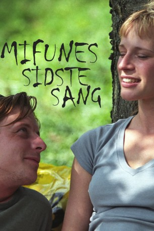

IMDB-Wertung: 7.2 / 10
IMDB-Wertung: 7.2 / 10  Metascore:
Metascore: 
Humorvoll menschlich erzählte Geschichte eines Kopenhagener Yuppies, der auf unbequeme Art mit seiner verdrängten Vergangenheit konfrontiert wird.
 IMDB-Wertung: 7.2 / 10 Metascore:
Humorvoll menschlich erzählte Geschichte eines Kopenhagener Yuppies, der auf unbequeme Art mit seiner verdrängten Vergangenheit konfrontiert wird.
Jahr: 1999
Dauer: 97 Minuten
FSK: 12
Land: Dänemark Studio: Concorde FilmverleihTonspuren:
Untertitel:
Auflösung: SD (706x412) Größe: 1000 MB
Regisseur: Søren Kragh-Jacobsen
Drehbuch: Anders Thomas Jensen, Søren Kragh-Jacobsen
Soundtrack: Thor Backhausen, Karl Bille, Christian Sievert
Darsteller:
 Iben Hjejle als Liva Psilander
Iben Hjejle als Liva Psilander Anders Hove als Gerner
Anders Hove als Gerner Sofie Gråbøl als Claire
Sofie Gråbøl als Claire Paprika Steen als Pernille
Paprika Steen als Pernille Sidse Babett Knudsen als Bibbi
Sidse Babett Knudsen als Bibbi Søren Malling als Palle Alfons
Søren Malling als Palle AlfonsDatei: X:\1999\Mifune (1999, FSK12, 706x412).mkv seit 10.10.2018
Festplatte: HD 1996-2002
 Es gibt insgesamt 81 Filme in der Gruppe '1999'
Es gibt insgesamt 81 Filme in der Gruppe '1999'